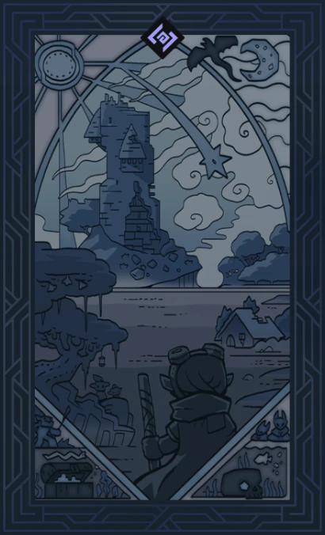
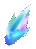

The first step to learn is to understand how Hytale structures its files and the different
world generators available to use! The most common one being WorldGenV2!
Below is a list of each World Generator and what they are currently used for.
WorldGenV1
WorldGenV1 is the first iteration of the World Generator and is what is used to
generate your Adventure Worlds today!
This Generator is temporary and is planned to be removed at a later date.
WorldGenV2
WorldGenV2 is the second and final iteration of Hytale's World Generator that
is used to generate Ancient Gateway Worlds and Goblin Breaches.
Pre-Generated
A Pre-Generated World is the final World type and will generate the exact same every time like the
Forgotten Temple!
Below is a diagram detailing the info used for generating temporary and permanent Worlds during
Gameplay. The main file you'll need to update here is the 'Instance' file!
Hytale's Worlds File Format
Contains a reference to an Instance. Creates a new permanent World based upon the Instance with no time limit and teleports the Player into it
Commands
/instance - Pulls up a menu to create a new World from an Instance /instance exit - Exit current World to previous World
Commands
/worlds list - List all created Worlds in your save file /worlds load - Teleport to an already created World /worlds remove/prune - Delete inactive World(s) /worlds setdefault - Set the World players initially spawn into


That's the basic understanding of Worlds! As we'll be modifying the terrain a lot, we'll want to see these
changes reflected in the Terrain around us, so I'll lastly include a couple very useful commands here:
/viewport --radius=5 - Regenerates an area of land around the Player after every WorldGen change /worldgen reload --clear - Regenerates all chunks. Use this sparingly as it takes a while to reload
Keep in mind these commands will erase any builds in your world, so use with caution!
Next Up